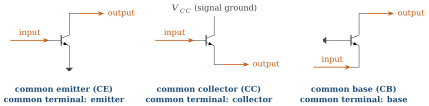
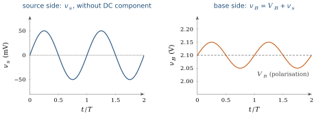
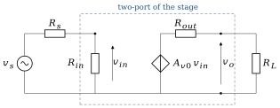
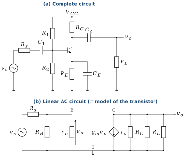
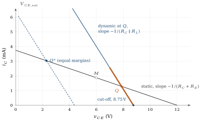
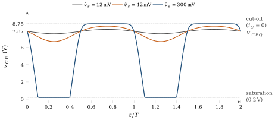
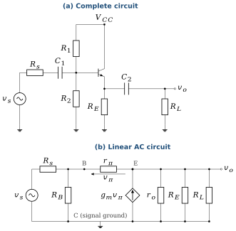
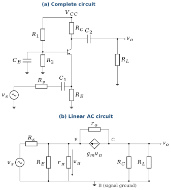
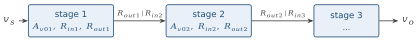
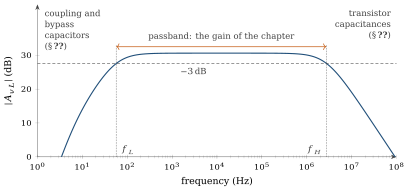

Why this chapter
In the previous chapter we set the operating point
Chapter outline
| § | Content |
|---|---|
| 5.1 | Qualitative presentation: three ways of connecting a transistor, three different gains |
| 5.2 | Isolating the bias from the signal: coupling and bypassing (capacitor, transformer) |
| 5.3 | The common method: superposition, linear AC circuit, equivalent two-port; how to extract |
| 5.4 | Common emitter: circuit, AC circuit, unloaded and loaded tables |
| 5.5 | Signal swing: AC load line, cut-off, saturation, distortion; where to place |
| 5.6 | Common collector (follower): the same |
| 5.7 | Common base: the same, and the output resistance that heralds the cascode |
| 5.8 | Summary table of the three configurations |
| 5.9 | Question 1: what happens with several cascaded stages? |
| 5.10 | Question 2: what happens at high frequencies? The Giacoletto model |
| 5.11 | Check your understanding |
| 5.12 | Summary |
| 5.13 | Exercises, and challenge: a new situation |
Learning objectives
By the end of this chapter, you will be able to:
distinguish the three basic configurations, say which terminal is common, what each one amplifies and why;
explain the role of coupling and bypass capacitors as a means of isolating the bias from the signal, and size one of them for a given low frequency;
derive from a complete circuit its linear AC circuit (superposition,
model), justifying what becomes of each element; calculate
, , , from , then replace a stage by its two-port ( , , ), describing how each quantity is extracted, unloaded and loaded; predict the effect of a source resistance and a load on the gain, and calculate the overall gain from a source to a load;
draw the AC load line of a stage, deduce the cut-off and saturation limits of the output, and distinguish these limits from that of the small-signal model;
choose the configuration suited to a need (impedance matching, voltage gain, current gain);
explain why the notion of a two-port simplifies the study of a cascade of stages, and calculate the gain of a cascade of two stages;
explain the origin of the high-frequency limit, place the Giacoletto model and estimate the upper cut-off frequency of a common emitter with the Miller effect.
Notation
| Symbol | Meaning |
|---|---|
| supply and bias resistors (chapter 4, section 4.6) | |
| Thévenin equivalent of the voltage divider; |
|
| operating point |
|
| signal source and its internal resistance; load resistance | |
| voltage and current at the input and output of the stage (small variations) | |
| control voltage of the |
|
| transconductance |
|
| output resistance |
|
| current gain, |
|
| unloaded ( |
|
| resistance seen by the collector for the signal ( |
|
| overall gain (source included); current gain |
|
| input and output resistances of the two-port | |
| coupling capacitors (input, output) and bypass capacitors (emitter, base) | |
| lower and upper cut-off frequencies | |
| base-emitter and base-collector capacitances, base access resistance (Giacoletto) | |
| transition frequency: the current gain of the transistor equals 1 |
5.1Three ways of connecting a transistor
Let us take up the idea of the previous chapter (chapter 4, section 4.1): a transistor has three terminals, one for control and two for the main path, whereas an amplifier needs two ports (an input, an output), hence four terminals. One of the three terminals is common to the input and the output. Depending on the terminal chosen, the same transistor behaves in three very different ways (figure 5.1).

The names are those of Boylestad [1]: common emitter (CE), common collector (CC, also called emitter follower) and common base (CB). The common terminal is not always physically connected to ground: the collector of the CC configuration is connected to the supply, which is a ground for the signal since its voltage does not vary (we will justify this in section 5.2).
5.1.1What each one amplifies
We need only two relations from the previous chapter,
| Configuration | Input | Output | Common | What it amplifies |
|---|---|---|---|---|
| Common emitter | base | collector | emitter | voltage and current: power, and the voltage is inverted |
| Common collector | base | emitter | collector | current only ( |
| Common base | emitter | collector | base | voltage only ( |
5.1.1.1Common emitter: power
A small variation of
5.1.1.2Common collector: current
Since
5.1.1.3Common base: voltage
The input current is
Key points: same transistor, three configurations
CE: voltage and current (maximum power, inverted output). CC: current only, voltage gain
5.2Isolating the bias from the signal: coupling and bypassing
5.2.1The problem
Chapter 3 already asked the question (chapter 3, section 3.6): how can a signal be applied to a biased circuit, without the source disturbing the bias, and without the bias disturbing the source? Here the problem is concrete. For
5.2.2The capacitor trick
A capacitor has an impedance

5.2.3Bypassing
In chapter 4 (chapter 4, section 4.6), we saw that
5.2.4The transformer
A transformer also achieves this isolation, by magnetic coupling: a winding transmits only variations. It also provides galvanic isolation and a change of impedance (turns ratio), but it is bulky, costly, and its bandwidth is limited at low and high frequency. It is used at radio frequency, in high-quality audio and for safety isolation. In this course, we will use the capacitor, which integrates well and is the default choice.
5.2.5For DC, for AC
Table 5.2 gathers what each element becomes depending on whether the bias or the signal is being studied. These rules are the core of the next step.
| Element | Bias study (DC) | Signal study (AC) |
|---|---|---|
| Capacitors |
open circuit | short circuit |
| Supply |
DC voltage source | ground (fixed voltage, no variation) |
| Resistors | unchanged | unchanged |
| Signal source |
turned off (not connected) | active, with its resistance |
| Transistor | active-region model ( |
small-signal |
5.2.6Sizing a capacitor
A capacitor
Watch out: what this assumption hides
Throughout this chapter, we assume the capacitors are perfect (short circuits) and we ignore the internal capacitances of the transistor. The calculated gain is therefore that of the passband, between a lower frequency
5.3The common method: superposition and two-port
5.3.1A single example for the three configurations
To compare, we keep the same bias as in the previous chapter (chapter 4, section 4.6):
5.3.2Superposition: two circuits, one for each task
The circuit is nonlinear (the transistor), but we have linearised it around
DC circuit: capacitors open, signal turned off, bias of chapter 4: this gives
, then , , . AC circuit: capacitors short-circuited,
grounded, transistor replaced by its model (table 5.2). The result is a linear circuit, made of resistors and controlled sources. Two-port: identify the input port and the output port of the AC circuit and extract
, , from it (figure 5.3).

5.3.3Extracting the three quantities of the two-port
The three characteristics are measured, or calculated, by three simple experiments on the AC circuit:
Unloaded gain
: load removed ( ), calculate the output voltage for a given input voltage. Input resistance
: apply a voltage (or a current) to the input and calculate the ratio. It may depend on the load. Output resistance
: turn off the signal source (keeping its resistance ), remove the load, apply a test source to the output and calculate . It is the Thévenin resistance seen from the output.
These are steps 4 to 6 of the algorithm of chapter 4 (chapter 4, section 4.5). Once the three quantities are known, the load and the source are handled by two voltage dividers (figure 5.3):
Key points: one stage, three numbers
A stage comes down to three numbers:
Attention : when the two-port is not “unilateral”
The diagram of figure 5.3 assumes that the output does not act on the input. This is true, to a very good approximation, for the common emitter and the common base. It is not true for the common collector: its input resistance depends on the load, and its output resistance depends on the source. We will say so whenever it matters.
5.3.3.1A teaching choice
In the three sections that follow, we do not carry out the calculations. We give the complete circuit, the linear AC circuit and the expressions of the three quantities, unloaded and loaded, with the numerical value of the example. The derivations are left to you, deliberately: each one is a direct application of Kirchhoff’s laws on the AC circuit, excellent practice, and they are the subject of the application exercises of chapter 5, in the tutorial problem book. The numerical values of the tables take
5.4Common emitter
5.4.1The circuit and its AC circuit
Figure 5.4 shows at the top the complete circuit, with the voltage divider,

5.4.2The two-port: expressions
Table 5.3 gives the expressions. The minus sign of the gain reflects the inversion. Note that
| Quantity | Expression | Numerical value |
|---|---|---|
| Unloaded ( |
||
| Unloaded gain |
||
| Input resistance |
1.62 kΩ | |
| Output resistance |
2.14 kΩ | |
| Loaded ( |
||
| Loaded gain |
||
| Overall gain |
||
| Current gain |
||
Two readings of the table. First, with
5.4.3When
Let us remove
| Quantity | Expression ( |
Numerical value |
|---|---|---|
| Unloaded gain |
||
| Input resistance |
7.6 kΩ | |
| Output resistance |
2.2 kΩ | |
| Loaded gain |
With
Key points: common emitter
High, negative voltage gain, medium
5.5Signal swing: the AC load line
The two-port answers the question “how much?”; it does not say “how far?”. The small-signal model knows no limit: it would promise 21 V at the output for 1 V at the source. The transistor, for its part, can neither carry a negative collector current nor go below
5.5.1The instantaneous operating point
At each instant, the voltage and current of the transistor are the sum of the DC part and the signal:

5.5.2The two limits: cut-off and saturation
The instantaneous point cannot leave the active region without the output ceasing to follow the input. There are two bounds, each due to a mechanism.
Cut-off. The collector current cannot become negative:
. According to (5.4), the output can therefore rise only by , up to . Saturation.
cannot go below : the output can fall only by (7.87 V if is taken; the difference matters only when this margin is small).
The largest symmetrical output that respects both limits is therefore
5.5.3From the generator to the output: distortion arrives before clipping
Let us go back from the output to the source. We place ourselves in the passband (capacitors short-circuited); the emitter is then grounded for the signal, and
What really happens? With the exponential law

In this stage, it is therefore distortion, and not clipping, that sets the useful amplitude: a few tenths of a volt at the output, that is 4 to 18 times less than the limit of the AC load line.
Signal swing, distortion and clipping
Common emitter of section 5.4 (VCC = 12 V, R1 = 47 kΩ, RC = 2.2 kΩ, RE = 1 kΩ, β = 100, Rs = 1 kΩ, VT = 25.85 mV). The transistor follows its exponential law, not the linear model. The orange dot sweeps the dynamic load line in step with the signal; the dashed curve is what the small-signal model would predict. Increase the amplitude: distortion appears well before clipping, unless part of RE is left unbypassed.
5.5.4Where to place
Chapter 4 placed
is on the static line: ; the two margins are equal on the AC line:
.
Together, they give
Should
5.5.5With an unbypassed emitter resistor
Let us leave
What changes above all is the input. The loaded gain falls to
Limits of the analysis.
Key points: signal swing
The signal travels along the AC load line, of slope
5.6Common collector (emitter follower)
5.6.1The circuit and its AC circuit
In this configuration the collector is connected directly to

5.6.2The two-port: expressions
Table 5.5 contains two rows that depend on the context: this is the signature of the common collector, which is not unilateral.
| Quantity | Expression ( |
Numerical value |
|---|---|---|
| Unloaded ( |
||
| Unloaded gain |
||
| Input resistance |
7.6 kΩ | |
| Output resistance |
28 Ω (for |
|
| Loaded ( |
||
| Loaded gain |
||
| Input resistance | 7.1 kΩ | |
| Overall gain |
||
| Current gain |
||
Key points: common collector
Voltage gain
5.7Common base
5.7.1The circuit and its AC circuit
The circuit is identical to the common emitter, but the base is grounded for the signal by

5.7.2The two-port: expressions
The unloaded gain is the same, in magnitude, as that of the common emitter, but positive: the output is in phase with the input. The difference lies elsewhere. The input resistance, 20 Ω, is very low: with the same 1 kΩ source, only 2 % of the signal reaches the stage (
| Quantity | Expression | Value |
|---|---|---|
| Unloaded ( |
||
| Unloaded gain |
||
| Input resistance |
||
| Output resistance |
||
| Loaded ( |
||
| Loaded gain |
||
| Overall gain |
||
| Current gain |
||
5.7.3An announced result: the output resistance
The formula for
Key points: common base
High, positive voltage gain, very low
5.8Summary table
Table 5.7 is the comparison table found in every textbook (Boylestad, tables 5.1 and 5.2 of chapter 5, § 5.14 [1]): the orders of magnitude, side by side. It is worth knowing by heart, because it is what guides the choice of a configuration.
| Common emitter | Common collector | Common base | |
|---|---|---|---|
| Common terminal | emitter | collector | base |
| Input |
base |
base |
emitter |
| Voltage gain |
high, negative: |
high, positive: |
|
| Current gain |
high ( |
high ( |
|
| Input resistance | medium ( |
high ( |
very low ( |
| Output resistance | medium ( |
low ( |
medium ( |
| Phase shift | 180° | 0° | 0° |
| What it amplifies | power (voltage and current) | current | voltage |
| Typical role | gain stage | buffer, impedance matching | low-resistance sources, high frequencies, cascode |
And for our numerical example (
| Numerical example | CE | CC | CB |
|---|---|---|---|
| 1.62 kΩ | 7.6 kΩ | 20 Ω | |
| 2.14 kΩ | 28 Ω | 2.2 kΩ | |
Key points: no configuration has every advantage
The choice is a compromise, and it is dictated by the impedances surrounding the stage: high-resistance source
The three configurations between a source and a load
Same bias (IC = 1.286 mA, gm = 49.8 mS, rπ = 2.0 kΩ, ro = 78 kΩ). Vary Rs and RL: the curve gives the overall gain |vo/vs| in dB as a function of RL; the dot marks the chosen load. Try Rs = 50 Ω (antenna) or RL = 100 Ω.
5.9Question 1: what happens with several cascaded stages?
The question arises as soon as a single stage is not enough, which is the general case: neither the gain, nor the input impedance, nor the output impedance of a single transistor suits every requirement. Must the whole analysis of the complete circuit be redone, with three or four transistors and dozens of resistors? No, and this is where the two-port shows its full value.

Each stage is a linear black box, described by its three numbers (
5.9.0.1An example
Do we want to supply a 100 Ω load from the 1 kΩ source? A single common emitter collapses: its gain is
Key points: the two-port is an abstraction
We stop looking at the transistors. In a cascade, the overall gain is the product of the gains, corrected by the impedance dividers at the interfaces. Design becomes impedance matching: boxes are assembled whose
5.10Question 2: what happens at high frequencies?
The answer is direct. So far the gain does not depend on frequency, because the
5.10.1The Giacoletto model
Adding these capacitances, and the base access resistance
With this model, the frequency response of a stage is calculated like that of any linear circuit (chapter 2): transfer function, poles, cut-off frequency. Two ideas are enough to estimate the result:
the transition frequency
is the one at which the current gain of the transistor becomes 1; the Miller effect:
connects the input and the output of an inverting stage of gain . The voltage across it is , so that, seen from the input, it counts as . The input capacitance is
5.10.2A numerical example
Take a small-signal transistor whose datasheet gives

Two remarks open onto what follows. The common collector and the common base have no Miller effect on
Key points: high frequencies
At high frequencies, the parasitic capacitances (
5.11Check your understanding
Why does a transistor, which has three terminals, give three amplifier configurations and not just one? For each, say which terminal is common, what is amplified, and why.
Why is the collector of the CC configuration, connected to
, a “ground” for the signal? Explain in your own words why a capacitor makes it possible to isolate the bias from the signal. What condition must its value satisfy? Why is
larger than ? The AC circuit of a stage is derived from the complete diagram by three replacements. Which ones?
What do
, , represent? Describe the experiment (calculation) that gives each of them. Why is the “unloaded” gain of a common emitter never obtained in a real circuit?
In what way is the common collector “non-unilateral”? What is the consequence for its use in a cascade?
Why does the input resistance of a common emitter increase when
is not bypassed? And what is lost? Why does the signal not travel along the static load line? What limits the output upwards, downwards, and why does distortion appear, without an emitter resistor, well before clipping?
What does the study of a cascade of three stages become if the two-port abstraction is used?
What is the origin of the high-frequency limit? What does the Giacoletto model contain in addition to the
model? Why does a high gain reduce the bandwidth of the common emitter?
5.12Summary
A transistor has three terminals, an amplifier two ports: one terminal is common. Three configurations: CE (voltage and current, inverted output), CC (current,
), CB (voltage, ). The capacitor is an open circuit for DC and a short circuit for AC: this is the trick that isolates the bias from the signal (coupling, bypassing; the transformer does the same). It sets the lower cut-off frequency.
Method: superposition, DC circuit then linear AC circuit (
model), then two-port ( , , ); . CE:
, , ; not bypassed: , larger . CC: , large , small , non-unilateral. CB: , , ; seen from the collector, a transistor whose emitter is not grounded reaches (cascode). Swing: the signal travels along the AC load line (slope
, ), which limits the output to (cut-off) and (saturation). Reaching cut-off requires : without an unbypassed , distortion arrives well before clipping. The middle of the static line equalises the margins only if . Cascade: each stage is a linear black box; the overall gain is the product of the gains and of the interface dividers. At high frequencies, the parasitic capacitances (
, ), measurable and calculable, limit the bandwidth; the Giacoletto model and the Miller effect make it possible to estimate it.
And now?
We know how to bias a transistor, extract a linear model from it, insert it into three configurations and read a stage as a two-port. It remains to combine: class B and the push-pull, the Darlington and the feedback pair, differential amplifiers, multiple stages with overall feedback. All rest on what you have just seen: a linear black box, three numbers, one method. The same approach applies to field-effect transistors, of which the MOS is the most important case.
5.13Exercises
The exercises for this chapter are collected in the tutorial problem book, in the section “Course application exercises” of chapter 5; their answers are in the tutorial solutions book, in the same place.